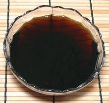

 |
Teriyaki SauceJapan - Teri Yaki | ||||
| Makes: Effort: Sched: DoAhead: |
1 cup * 15 min Yes |
Teriyaki means shiny (teri) grilled (yaki). Traditional Japanese Teriyaki Sauce is not thickened, but most bottled Teriyaki sauces in North America are heavily thickened, like barbecue sauces. | |||
|
1/2 1/2 1 |
c c T |
Soy Sauce (1) Mirin (2) Sugar |
Japanese Traditional Teriyaki Sauce - (5 min)
|
|
1/2 1/2 1/2 1 3 1-1/2 |
c c T T cl t |
Soy Sauce (1) Sake (3) Brown Sugar White Sugar Garlic Ginger, grated |
Aromatic Teriyaki Sauce - (10 min) This sauce can be used as a marinade, as a dip, or for any grilled Teriyaki recipe.
|
|
1 1 2 |
c t t |
Teriyaki Sauce Cornstarch Water |
Teriyaki Glaze - (5 min) This is a little more like the bottled Teriyaki sauces found in North America.
|